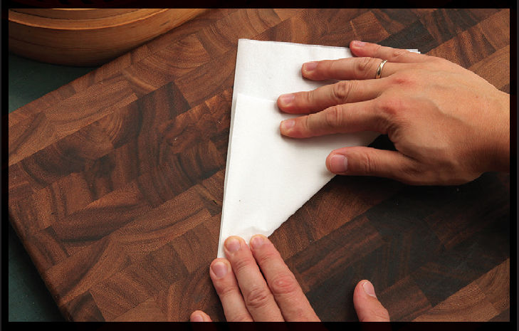
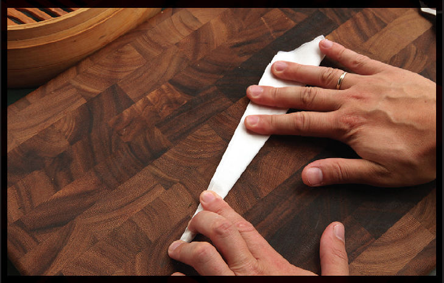
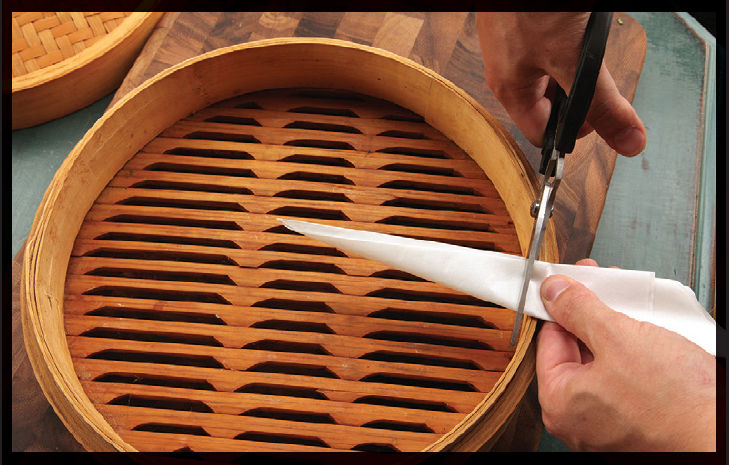
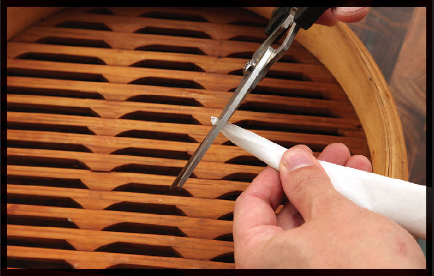
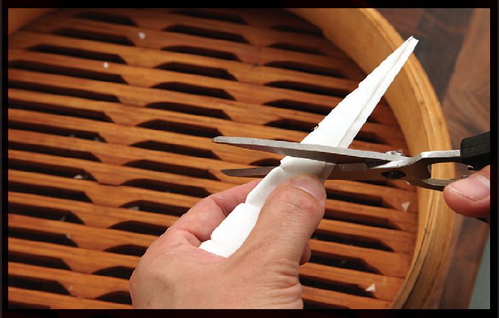
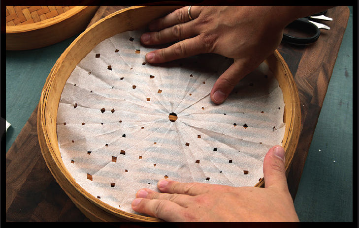

Dashi-Simmered and Dashi-Dressed Dishes
Now that we know how to make great dashi (see here), let’s put it to use in the simplest Japanese dishes: nimono. Nimono are cooked by simmering fresh ingredients in shiru, a seasoned broth. Shiru can be seasoned with a number of ingredients, but dashi with soy sauce, sake, mirin, and sugar is the most common. Miso and other ingredients like vinegar or citrus juice might also make an appearance in some nimono. They can range from simple vegetable preparations to more complex meat and vegetable stews, but their preparation is never more complicated than “put this stuff together, add some broth, and cook it until it’s done.”
Nimono are traditionally prepared in wide terra-cotta casserole dishes covered with an otoshibuta, a lid that is purposely made smaller than the cooking vessel so that it drops directly onto the food, keeping it submerged as it simmers. This allows ingredients to cook gently in a single, even layer. A wok or a wide sauté pan does the same job very well, provided you make your own otoshibuta for it. This is easy to do with a sheet of parchment paper.
HOW TO MAKE A PARCHMENT PAPER OTOSHIBUTA
Cutting a sheet of parchment paper into a circle that fits whatever vessel you are using is simple. It’s useful for lining a bamboo steamer basket when steaming dumplings. It’s great for Japanese-style simmered dishes as it keeps ingredients moist while allowing evaporation. It’s also useful for Western-style stews and braises when you want to have some of the benefits of lidless cooking (more evaporation and browning in the oven) and lid-on cooking (gentler cooking of ingredients, protection against the top of the stew drying out).
Here’s how you do it.
Step 1 • Fold a Sheet of Parchment into Quarters

Starting with a flat sheet of parchment paper larger than the size of your cooking vessel, fold it in half once, then again in the perpendicular direction. It helps to use flat sheets of parchment rather than parchment from a roll (though either will work).
Step 2 • Fold into a Triangle

Fold the parchment into a right triangle with its point at the intersection of the first two folds (the center of the unfolded parchment sheet).
Step 3 • Make the Triangle More Slender

Continue to fold the parchment one or two more times to form a more slender triangle, always keeping the vertex of the fold at the same central point.
Step 4 • Trim the Edges

Hold the triangle with the acute tip at the center of your cooking vessel. With a pair of kitchen shears, trim the back edge of the triangle so that its height ends up slightly smaller than the radius of the cooking vessel. If using a flat-bottomed wok to cook, make the height slightly larger than the flat-bottomed area of your wok.
Step 5 • Trim the Tip

Cut off the top ½ inch or so of the triangle. This will create a hole for steam to vent through, which keeps your parchment lid from puffing up off the surface of the liquid.
Step 6 • Cut Notches

If using to line a steamer basket, cut little notches up and down both edges, spacing them about an inch apart.
Step 7 • Unfold

Unfold your parchment lid and marvel at how perfectly it fits your pot.